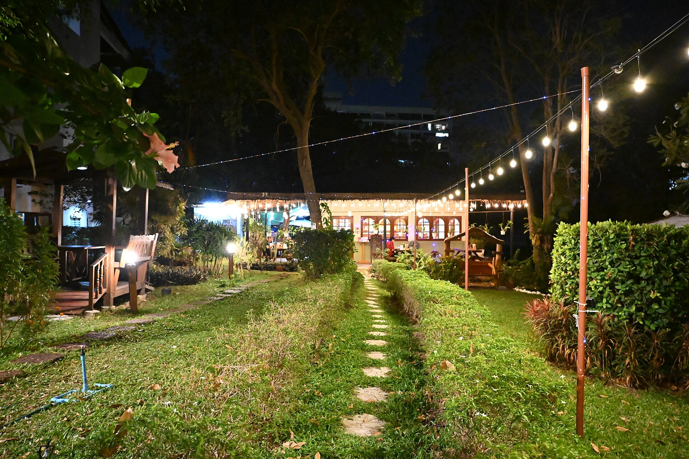
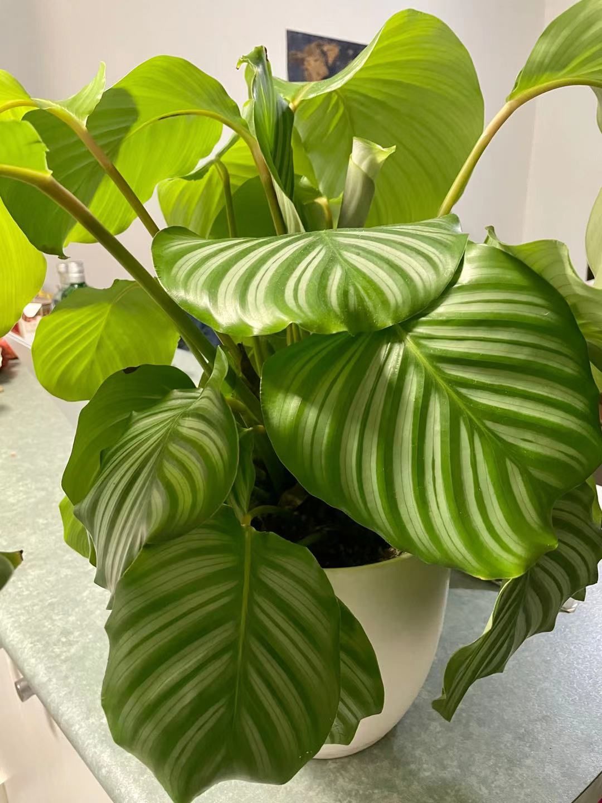
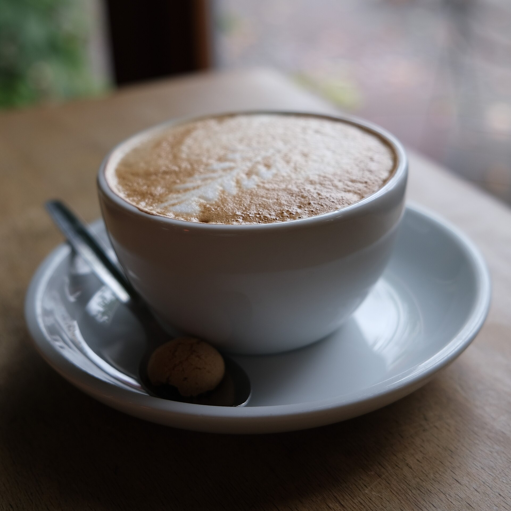
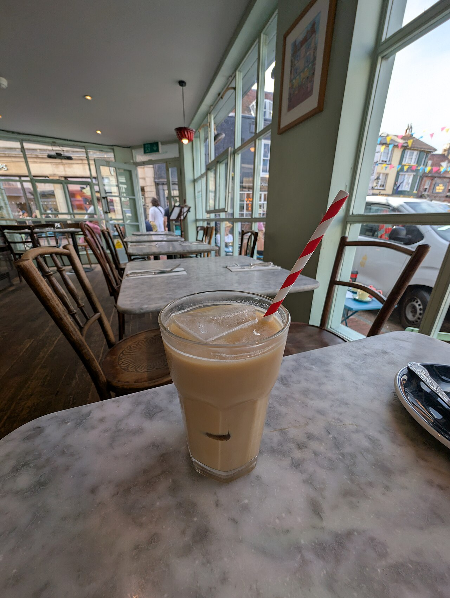

ひとり
本を開く、スマホを置く、ただぼんやりする。誰にも合わせなくていい時間を、ひとりぶんだけ。

御坊の町の、ひと息つける場所。
GARDENBASE CHILL
ふっと力を抜きたいときに、立ち寄れる場所。

GARDENBASE CHILL は、御坊市湯川町にあるカフェです。
店名の「GARDEN」「BASE」「CHILL」から思い浮かべたのは、緑の気配をそばに感じるような、肩の力を抜いて過ごせる場所。ここでは、店名から連想したイメージでご紹介しています。
ひと休みしたいときに、あるいは用事のあいまに。ふらりと戻ってこられる「基地」のような一軒です。
コーヒー、甘いもの、冷たいドリンクといった、ほっとする一杯や一皿のイメージです。



提供内容は準備中(お問い合わせください)。上記は区分のイメージです。
本を開く、スマホを置く、ただぼんやりする。誰にも合わせなくていい時間を、ひとりぶんだけ。
向かいに座って、ゆっくり話す。話題が尽きても、居心地が悪くならない時間を。
急がない日の寄り道に。気づけば少し長居してしまう、そんな過ごし方もあります。

過ごし方のイメージです。営業時間はこのあとの「基地への道しるべ」をご確認ください。
お出かけ前に、お電話かInstagramで最新の情報をご確認ください。
口コミのイメージ例をまとめました(実際のお客様の声ではない、サンプルです)。
掲載写真はイメージ素材です。実際の店舗の様子とは異なる場合があります。